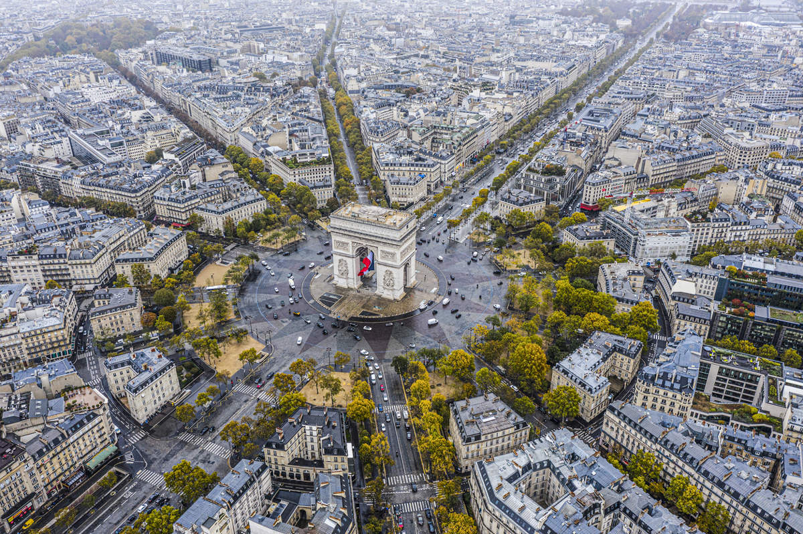
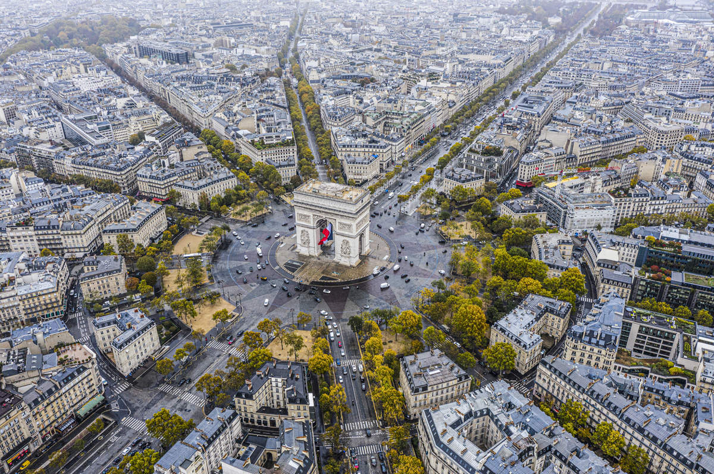

Visit Paris
París, la capital de Francia, es conocida por su elegancia, historia y cultura. Con monumentos emblemáticos como la Torre Eiffel, el Louvre y la Catedral de Notre-Dame, la ciudad ofrece una mezcla perfecta de arte, arquitectura y gastronomía. Sus encantadores barrios, como Montmartre y Le Marais, invitan a explorar sus cafés, boutiques y museos. París es el destino ideal para quienes buscan una experiencia única llena de romance, historia y estilo.
 

Fiesta Nacional
La Fiesta del 14 de julio en París, también conocida como Día de la Bastilla, celebra la Revolución Francesa y la toma de la Bastilla en 1789. Es una de las festividades más importantes del país, con eventos como un desfile militar en los Campos Elíseos, conciertos y bailes populares. La noche culmina con un espectacular show de fuegos artificiales sobre la Torre Eiffel, iluminando la ciudad y creando un ambiente festivo y patriótico. Es una ocasión única para experimentar la cultura y el espíritu de Francia.